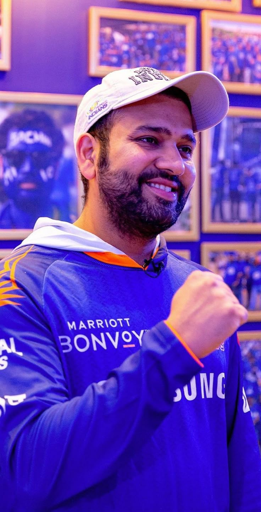

🌟 Role Model
Rohit Sharma – The Hitman

Rohit Sharma, fondly called "The Hitman", is a symbol of elegance, patience, and power in world cricket. Hailing from a modest background in Borivali, Mumbai, his journey is nothing short of inspirational. From sleeping on the floor in a single-room home to becoming the captain of the Indian national cricket team, Rohit’s rise embodies true grit and perseverance.
His career took flight when he was picked for the Indian team in 2007, but it was under pressure that he reinvented himself as an opener in 2013, becoming unstoppable. In the 2019 Cricket World Cup, Rohit stunned the world by scoring 5 centuries, the most by any player in a single edition, and finishing as the tournament’s highest run-scorer.
At the IPL stage, Rohit led the Mumbai Indians to dominance, becoming the most successful captain in IPL history with five championship titles. His calm presence and tactical brilliance made him a fan favorite.
In recent years, Rohit has taken over the reins of Team India as captain, leading with maturity and vision. Under his leadership, India has lifted two consecutive ICC trophies, proving his mettle as a leader who delivers on the biggest stage.
Rohit's journey from Borivali to the world stage is a tale of resilience, transformation, and excellence. He is not just a batsman or a captain — he is an inspiration to every Indian dreamer.